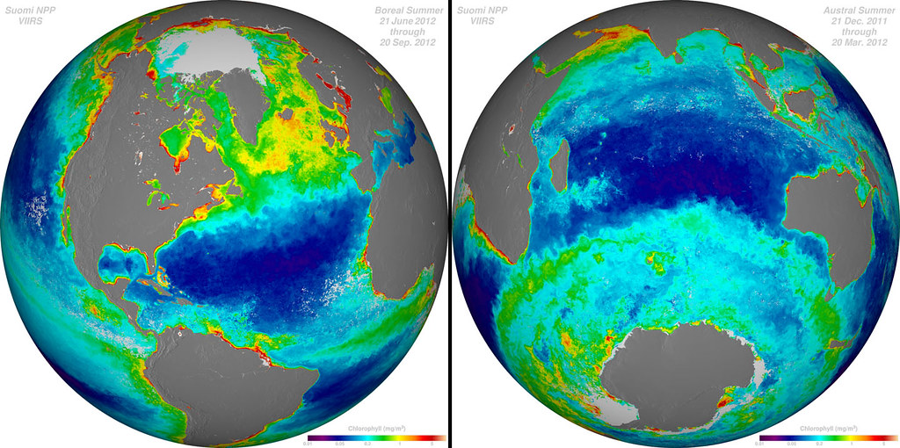
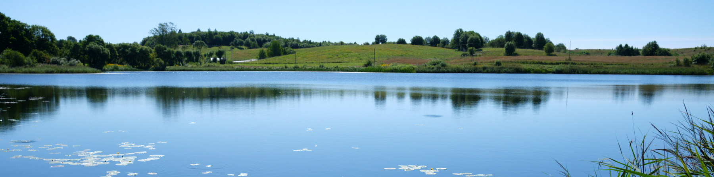

Extracting and analysing lake surface temperature data from satellites
Įvadas
Vandens kokybė yra svarbus aplinkos rodiklis. Tradiciniais metodais gaunama informacija apie vandens kokybę yra tiksli, tačiau šie metodai reikalauja daug žmogiškųjų ir piniginių išteklių, dėl to dažniausiai matavimai būna atliekami tik kai kuriuose telkiniuose. Be to matavimai būna taškiniai, nors didesniuose vandens telkiniuoe vandens kokybės parametrai gali skirtis skirtingose akvatorijos vietose.
Palydoviniai duomenys gali padėti surinkti daugiau duomenų apie vandens telkinius. Naudodami palydovinę informaciją galime stebėti vandens parametrų pasiskirstymą visame vandens telkinyje bei gauti stebėjimų duomenis dažniau. Palydovai suteikia informaciją apie optines vandens savybes. Optiškai sudėtinguose vandens telkiniuose (t.y. gėlavandeniuose telkiniuose) gali būti stebimi trys vandens parametrai: chlorofilo-a pigmentas, randamas dumbliuose ir melsvabakterėse, suspenduota medžiaga, ir spalvotoji ištirpusi organinė medžiaga.
Šiame dokumente apibūdinamas metodas skirtas biofizinės ežero klasės nustatymui. Šis metodas naudoja spektrinius vandens požymius, gautus iš Europos Kosmoso Agentūros (EKA) Copernicus Sentinel-2 misijos palydovų. Metodas yra paremtas mašininio mokymosi atsitiktinio miško algoritmu ir priskiria ežerui vieną iš keturių klasių:
Skaidri klasė. Vandens skaidrumas yra didesnis nei 2 m vidutino gylio ir giliuose ežeruose ir didesnis nei 1,3 m sekliuose ežeruose. Taip pat šios klasės vandenyje stebima maža optiškai aktyvių medžiagų koncentracija, tad vandens spektras nėra jų paveiktas. Vandens skaidrumas šioje klasėje siejamas su gera ir labai gera ekologine vandens būkle, kaip nustatoma ir pagal Europos Sąjungos Bendrosios Vandens Politikos direktyvą.
Tarpinė klasė. Vandens skaidrumas yra geras arba labai geras, tačiau chlorofilo-a koncentracija yra kiek didesnė (tarp 7 ir 20 mg/m^3) nei skaidrioje klasėje, tad ši klasė gali būti siejama su lengvais dumblių ir melsvabaketerių žydėjimais.
Chla-klasė. Vandens skaidrumas yra mažesnis nei 2 m vidutino gylio ir giliuose ežeruose ir mažesnis už 1,3 m sekliuose ežeruose, o chlorofilo-a koncentracija dažniausiai yra aukštesnė nei 20 mg/m^3. Ši klasė siejama su vidutine, bloga ar labai bloga vandens kokybe.
Drumsta klasė. Vandens skaidrumas yra mažesnis nei 2 m vidutino gylio ir giliuose ežeruose bei mažesnis nei 1,3 m sekliuose ežeruose, tačiau chlorofilo koncentracija yra panaši į tarpinės klasės koncentraciją, tad mažas vandens skaidrumas yra veikiau nulemtas aukštesnės spalvotosios ištirpusios medžiagos koncentracijos.
Daugiau informacijos apie šį modelį rasite viešai prieinamoje Grendaitės and Stonevičiaus (2022) publikacijoje. Modelių tikslumas išbandymo etape skyrėsi tarp klasių: 27 % drumstai klasei, 70 % Chla-klasei, 81 % tarpinei klasei ir 85 % skaidriai klasei.
Čia pateiktas programinis kodas pritaiko ežero klasės nustatymo modelius, naudojant Sentinel-2 duomenis, prieinamus per Google Earth engine (GEE). Pateiktas kodas taip pat nufiltruoja netinkamus palydovinius duomenis bei pritaiko ežero klasės modelį.

Modelis
Tam kad patogiai pasiekti ir apdoroti vandens klasių duomenis, mes sukūrėme du programinius kodus. Pagrindinis kodas leidžia pasiimti duomenis iš GEE paskyros ir yra parašytas Python programavimo kalba. Šis kodas yra prieinamas naudojantis Google Colaboratory aplinka. Google Colaboratory yra nemokama programavimo aplinka, kurioje jau yra įdiegtos įvairios Python bibliotekos. Kad galėtume pasiekti duomenų rinkinius per Google Earth Engine, reikalinga Google paskyra (jei Google paskyros neturite, ją susikurti galite eidami į nuorodą. Tuomet reikia užsiregistruoti Google Earth Engine. Ši registracija leidžia autorizuoti prisijungimą ir gauti prieigą prie GEE palydovinių duomenų.
Po registracijos, naudokite programinį kodą, naudodami žemiau esančią nuorodą

Kai atidarote kodą, pasidarykite jo kopiją savo Google Diske (pasirinkite Failas ir tada Išsaugoti kopiją Diske). Savo kodo kopiją galite redaguoti ir keisti kaip jums patinka. Tolimesnės instrukcijos, kaip naudotis kodu, yra pateiktos pačiame kode. Tam kad atisiųsti vandens paviršiaus temperatūros duomenis, jums reikės paruošti jums reikalingų vietų koordinačių taškų dokumentą, pagal čia pateiktą pavyzdį. Be to jums į Google Colab aplinką reikės įkelti mašininio algoritmo modelius, kuriuos galite atsisiųsti čia (tačiau nepamirškite pirmiausia išpakuoti šiuos modelius iš .zip dokumento). Įvykdę Google Colaboratory kodą, atsiųsite temperatūros palydovinius duomenis kurie atrodys kaip čia pateiktas pavyzdys. Šiame pavyzdyje mes naudojame tris Lietuvos ežerus, bet jūs galite pridėti tiek ežerų ar taškų ežere kiek jums reikia. Tik nepamirškite nesirinkti taškų per daug arti prie kranto, ir arčiau nei 100 metrų vienas nuo kito (nes satelito raiška yra 100 metrų).
Kai jau turėsite dokumentą su palydoviniais duomenimis, naudokite šį R markdown kodą tam kad toliau apdoroti duomenis, sukurti tam tikrus paveikslus (kaip žemiau nurodytas pavyzdys) arba palyginti satelitų duomenis su monitoringo duomenimis. Šiame dokumente kartu su kodu yra pateikti ir palyginamieji monitoringo duomenys trims ežerams. Čia jūs galite pažiūrėti kaip atrodo šios programos sukurti rezultatai.

Modelio taikymas
Šis ežero vandens klasės ir kokybės nustatymo modelis gali būti pritaikytas didelio masto vandens kokybės stebėjimui. Tokie stebėjimai ir duomenų pasiekiamumas yra svarbūs siekiant ES misijos Atkurti mūsų vandenyną ir vandenis tikslų. Čia pateikti programiniai kodai ir modeliai taip pat gali būti taikomi moksliniuose tyrimuose, siekiant susieti vandens kokybės ir kitų biologinių parametrų ar žuvų gausumo duomenis. Tačiau yra svarbu atkreipti dėmesį į tai, kad modelis yra parengtas Lietuvos ir kitiems borealiniams ežerams ir jo pritaikymas tropikų ar savanų vandens telkiniams turėtų būti toliau vystomas ir tikrinamas.
